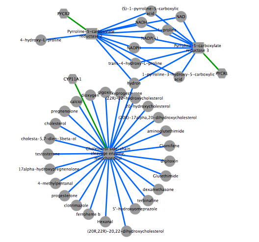

fetchGrinnNetwork
This example shows how to reconstruct a biological network (grinn network) using information from Grinn internal database
- INPUT
The table summarizes important arguments
Argument Value Description txtInput list of keywords e.g. ENSG00000143811 Keywords are IDs from a specific database. from type of keyword e.g. metabolite Type of starting points in the network. It can be one of metabolite, protein, gene, pathway. to type of end nodes e.g. pathway Type of endpoints in the network. It can be one of metabolite, protein, gene, pathway. dbXref database name e.g. kegg Database name used for the keywords ids. It can be one of grinn, chebi, kegg, pubchem, inchi, hmdb, smpdb, reactome, uniprot, ensembl, entrezgene. - EXECUTE FUNCTION
Build a grinn network of gene-protein-metabolite using the list of ENSEMBL genes
txtInput <- list('ENSG00000140459','ENSG00000143811','ENSG00000104524') result <- fetchGrinnNetwork(txtInput, from="gene", to="metabolite", returnAs="tab", dbXref="ensembl") #display the first 10 edgelists result$edges[1:10,] - EXPORT OUTPUT
Export the network as tab-delimited files to visualize in Cytoscape
write.table(as.matrix(result$edges),"grinnNwEdge.txt",sep="\t",row.names = F, quote = FALSE) write.table(as.matrix(result$nodes),"grinnNwNode.txt",sep="\t",row.names = F, quote = FALSE) - VISUALIZATION
The figure is generated by Cytoscape 3.1.1 using grinn style (grinn.xml). It is corresponding to the cytoscape file grinnNw.cys.

Diagram legend

Go to HOME | Documentation | fetchGrinnNetwork | fetchCorrGrinnNetwork | fetchDiffCorrGrinnNetwork | fetchModuGrinnNetwork | fetchGrinnCorrNetwork | input formats